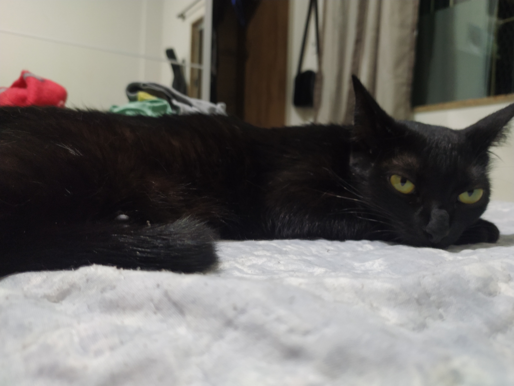
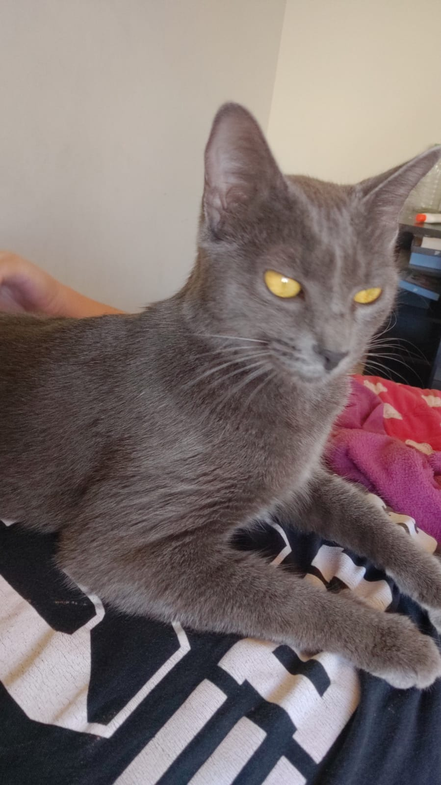
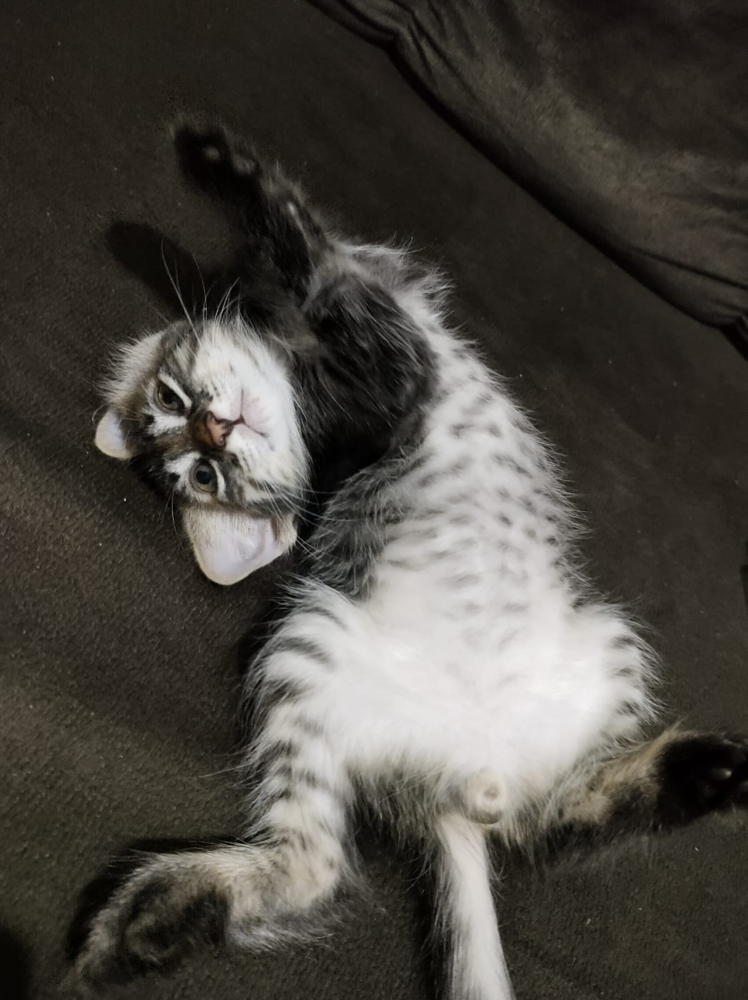

Uma página sobre @s gat@s mais bonit@s do mundo: Preta, Grisa e Tigrão

A Dominadora, coloca todos os gatos da vizinhança para correr desde os 4 meses de idade.
Tem uma relação de protetora da sua irmã Grisa, mas um ódio pelo gato mais novo Tigrão.

A Bundona, a maior gata da região, mas não se engane, ela só sabe comer e caçar baratas.
Sofre bullying dos gatos da vizinhança e corre pra sua irmã Preta, mas tem uma relação de amizade com o gato mais novo Tigrão.

O TDAH, o gato que sofre do Transtorno de Défict de Atenção e Hiperatividade.
Em um momento ele esta mordendo você inteiro e no outro esta dormindo,
amigo da Grisa e o saco de pancadas da Preta, tendo a necessidade de constantemente ser salvo por seus donos.